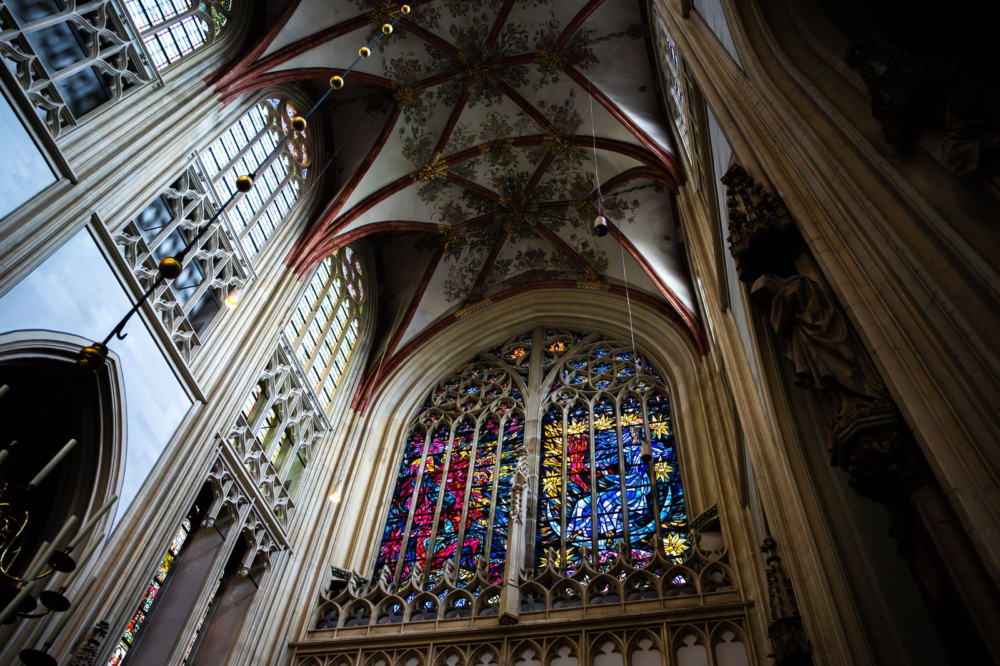

The conservator
Rosalind Fenn — trained as a glazier, practised as a conservator.
The two trades are not the same. A glazier makes windows; a conservator keeps old ones alive, which is mostly the discipline of knowing what not to do. This page is the working method, the ethics it runs on, and the terms — all printed, because a client should be able to read the rules before the scaffold goes up.
The story
Rosalind Fenn served a glazier's apprenticeship in York, cutting and leading new work, before a winter spent assisting on a cathedral survey changed the direction of the bench. New glass is honest work, but the old glass was better company: every panel a document, every crack an event with a date in it. She retrained in conservation, gained accreditation (ICON — the Institute of Conservation), and founded Fenn Glass Conservation in 2009.
Since then the practice has conserved 23 windows — cathedral roses, transept lights, small parish windows with one precious panel in them — and refused to treat nine panels, each refusal written up with the same care as a treatment. The studio is one bench, one assistant conservator, and a scaffold tower that has been up most of the churches in the north.
Credentials, stated plainly
- Accredited conservator, ICON (stained glass).
- Glazier's apprenticeship completed before conservation training — the bench skills came first.
- Surveys and reports prepared for faculty and listed-building applications; documentation supplied to diocesan advisory committees.
- Every commission insured for work in situ and at the bench; certificates available with any quotation.

How a conservation runs
Five stages, in order, every time| Stage | What happens | What the client receives |
|---|---|---|
| 1 · Survey | Every panel examined from scaffold or tower, inside and out, in transmitted and raking light. Glass, paint and lead recorded separately — they fail separately. | The condition report: panel map, register, grades. |
| 2 · Panel map | The window drawn as the numbered map that will govern everything after it. Each panel's condition note written while the evidence is in front of us. | The map and register — the same documents this site's front page is built from. |
| 3 · Ethics review | Each proposed treatment tested against the rule: does it destroy more than it saves? Panels that fail the test are recommended for monitoring, in writing, with reasons. | The recommendations, including any refusals, before any price is discussed. |
| 4 · Scaffold & bench | In-situ work where the panel can stay; bench work where it cannot. Every removal photographed, every piece logged. Replaced glass is archived, never discarded, and replacements are marked discreetly with the year. | Progress photographs; the archive of removed material, stored as agreed. |
| 5 · Documentation | The file closed: what was done, to which panel, with what, and why — written for the conservator who opens it in fifty years. | The full conservation record, in print and digital form, lodged with the building's own archive. |
The honesty page
The rules, printed before you hire themThe best conservation is the one nobody notices
If a visitor can tell where the conservator has been, something has usually gone wrong. New lead should sit as quietly as old; a replaced piece should be findable by the record and the small year-mark, not by shouting across the window. We do not “improve” colour, complete missing faces from imagination, or make a window read as it never did. Where paint is lost, it stays lost, stabilised — the loss is part of the evidence.
Dates are ranges, and the evidence travels with them
Glass is dated on what can be shown: pot-metal palette, paint technique, grisaille pattern, the archaeology of its lead. That evidence rarely earns a single year, so this practice gives ranges — “consistent with c.1280–1320” — and prints the reasoning beside them. A date stated as a certainty, on evidence that supports only a range, is a small dishonesty that compounds in every document that copies it.
Original glass is never thrown away
Every piece removed — cracked, mismatched, even ugly — is cleaned, labelled with its panel and date, and archived. A 19th-century repair in the wrong blue is not rubbish; it is the window's biography, and a future conservator with better tools may read it differently. The bin is the one tool this studio does not use on historic material.
Some damage is left alone, on purpose
Minimum intervention is not minimal effort; it is a decision, argued panel by panel. Where treatment would cost more original material than it saves, the report recommends monitoring and says why — as it did for the south petal of the West Rose and the dark panel at St Hilda's. Nine refusals stand in the practice's record. We count them as work done properly, and we do not charge for the ethics review that produces them.
The window is not ours
Every window belongs to its building and its congregation — the people who worship under it, marry under it, and will hand it on. The conservator is a guest with a scaffold. Credit is therefore kept in its place throughout this site: the practice claims the conservation, per window, and nothing more.
Engagement terms
At practice level — the survey fixes the detail- Permissions. Work proceeds under the building's own permissions — for Church of England buildings, the faculty system; for others, the relevant listed-building or scheduled-monument consent. The practice supplies the documentation those applications need (report, panel map, method statement) and does not begin treatment before the permission exists.
- Fees. Surveys are charged per day (Table F1 on the report page) and the survey fee is not conditional on further work being commissioned — a survey that ends in a refusal has still been worth its fee, to both parties. Treatment is priced per panel from the grades, quoted in writing before the scaffold rises.
- Deposit & stages. Treatment commissions are staged against the five stages above; no stage is invoiced before its documentation is delivered.
- The archive. Removed glass remains the property of the building, archived as agreed at the ethics review — usually in the building's own store, catalogued by this practice.
- Monitoring. Windows under a monitor-only recommendation are offered annual inspection at £380 per window, with photographic comparison against the survey record.
To start: one email describing the window, or the demonstration form on the Enquiry page.